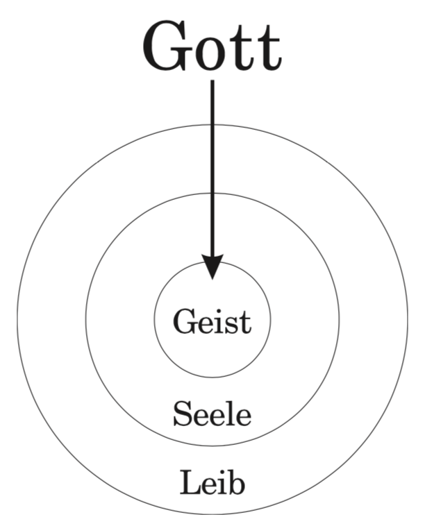
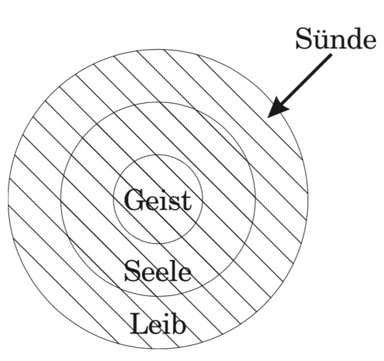
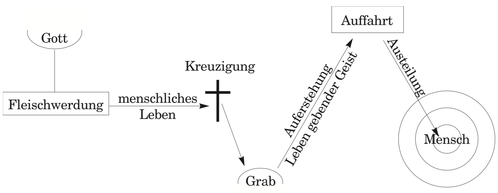
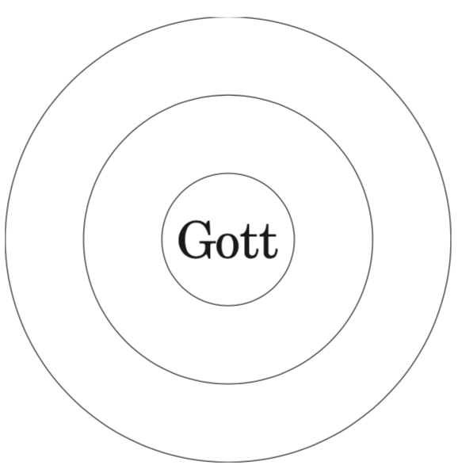
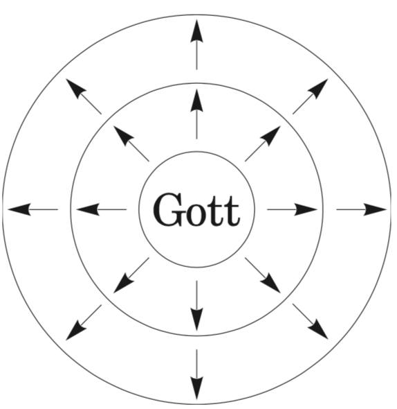

DAS GEHEIMNIS DES MENSCHLICHEN LEBENS
Hast du dich je gefragt,
warum du auf dieser Welt bist und
was der Sinn deines Lebens ist?
Es gibt sechs Schlüssel, die dieses Geheimnis aufschließen.
1. Der Plan Gottes
Gott möchte Sich durch den Menschen zum Ausdruck
bringen (Röm. 8:29).
Zu diesem Zweck schuf Er den Menschen in Seinem
eigenen Bild (1.Mose 1:26).
Genauso wie ein Handschuh im Bild einer Hand gemacht ist,
so ist auch der Mensch im Bild Gottes gemacht,
um Gott zu enthalten.
Indem der Mensch Gott als seinen Inhalt aufnimmt,
kann er Gott zum Ausdruck bringen (2.Kor. 4:7).
2. Der Mensch
Gott machte den Menschen als ein Gefäß,
um Seinen Plan zu erfüllen (Röm.9:21-24).
Dieses Gefäß besteht aus drei Teilen:
Leib, Seele und Geist (1.Thess. 5:23).
Der Leib berührt die Dinge des äußeren
Bereichs und nimmt sie auf.
Die Seele, die seelische Fähigkeit,
berührt die Dinge des psychologischen Bereichs
und nimmt sie auf.
Und der Geist, der innerste Teil des Menschen,
wurde geschaffen,
um Gott Selbst zu berühren und aufzunehmen
(Joh. 4:24).
Der Mensch wurde nicht nur geschaffen,
um Nahrung in seinen Magen oder Erkenntnis in
seinen Verstand aufzunehmen,
sondern um Gott in seinen Geist aufzunehmen (Eph. 5:18).

3. Der Fall des Menschen
Doch bevor der Mensch Gott als Leben in seinen Geist hinein
aufnehmen konnte,kam die Sünde in ihn hinein (Röm. 5:12).
Die Sünde tötete den Geist des Menschen (Eph. 2:1),
machte ihn zu einem Feind Gottes in seinem Verstand
(Kol. 1:21) und wandelte seinen Leib in sündiges Fleisch um
(1.Mose 6:3; Röm. 6:12).
Auf diese Weise beschädigte die Sünde alle drei Teile
des Menschen und entfremdete ihn von Gott.
In diesem Zustand konnte der Mensch Gott nicht aufnehmen.

4. Die Erlösung durch Christus für die Austeilung Gottes
Dennoch hielt der Fall des Menschen Gott nicht davon ab,
Seinen Plan zu erfüllen. Damit Gott Seinen Plan ausführen
konnte, wurde Er zuerst ein Mensch mit dem Namen
Jesus Christus (Joh. 1:1, 14).
Dann starb Christus am Kreuz, um den Menschen
zu erlösen (Eph. 1:7), nahm so seine Sünde
hinweg (Joh. 1:29) und brachte ihn zu Gott zurück
(Eph. 2:13).
Schließlich wurde Er in Seiner Auferstehung
zum Leben gebenden Geist (1.Kor. 15:45), so dass
Er Sein unausforschlich reiches Leben in den Geist
des Menschen hinein austeilen kann (Joh. 20:22; 3:6).

5. Die Wiedergeburt des Menschen
Da Christus zum Leben gebenden Geist geworden ist,
kann der Mensch jetzt Gottes Leben in seinen Geist
hinein aufnehmen. Die Bibel nennt dies Wiedergeburt
(1.Petr. 1:3; Joh. 3:3). Um dieses Leben aufzunehmen,
muss der Mensch vor Gott Buße tun und an den Herrn
Jesus Christus glauben (Apg. 20:21; 16:31).
Um wiedergeboren zu werden, komme einfach mit einem
offenen und ehrlichen Herzen zun Herrn und sage zu Ihm:
Herr Jesus, ich bin ein Sünder. Ich brauche Dich.
Danke, dass Du für mich gestorben bist. Herr Jesus,
vergib mir.
Reinige mich von allen meinen Sünden. Ich glaube,
dass Du aus den Toten auferstanden bist.
Ich nehme Dich gerade jetzt als meinen Retter und
als mein Leben auf! Komm in mich hinein!
Erfülle mich mit Deinem Leben! Herr Jesus,
ich gebe mich Dir für Deinen Vorsatz hin.

6. Nach der Wiedergeburt muss ein Gläubiger getauft
werden (Mk. 16:16).
Dann beginnt Gott einen Prozess, der das ganze
Leben dauert, in welchem Er Sich als Leben
vom Geist des Gläubigen aus in seine Seele
hinein ausbreitet (Eph. 3:17).
Dieser Prozess, der Umwandlung genannt wird
(Röm. 12:2), erfordert die Mitarbeit
des Menschen (Phil. 2:12).
Der Gläubige arbeitet mit dem Herrn zusammen,
indem er es dem Herrn erlaubt,
Sich in seine Seele hinein auszubreiten,
bis alle seine Wünsche, Gedanken und
Entscheidungen eins werden mit denen
von Christus.
Schließlich wird Gott bei der Wiederkunft
Christi den Leib des Gläubigen völlig mit
Seinem Leben durchsättigen.
Dies wird Verherrlichung genannt (Phil. 3:21).
Auf diese Weise wird der Mensch, anstatt
in jedem Teil seines Seins leer und beschädigt
zu sein, mit dem Leben Gottes erfüllt
und durchsättigt.
Dies ist Gottes vollständige Errettung!
Solch ein Mensch bringt jetzt Gott zum Ausdruck und
erfüllt so Gottes Plan!
Nachdem ein Gläubiger dieses Leben empfangen hat,
muss er an christlichen Versammlungen teilnehmen,
um mit dem Leben Gottes genährt und versorgt
zu werden, damit er in diesem Leben wachsen und
zur Reife kommen kann.
In der Gemeinschaft mit anderen Gläubigen
im Leib Christi kann ein Gläubiger den Reichtum
der Gegenwart Christi genießen.
